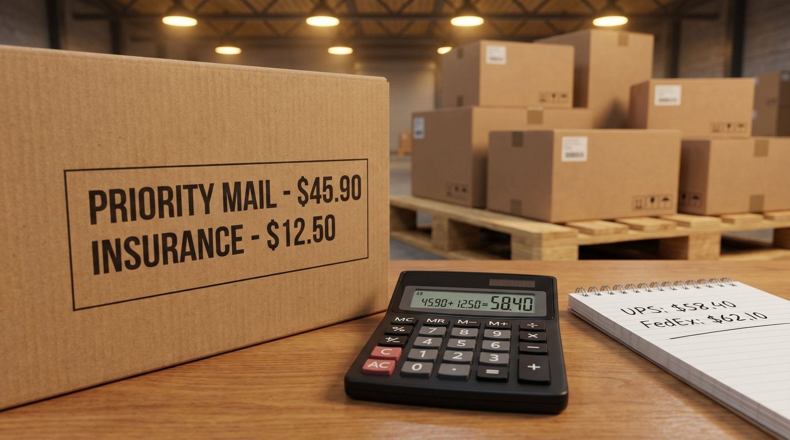

Fragtprisen er ikke fast. Den forhandles, den varierer med volumen og emballagestørrelse, og den kan optimeres med 15-30% uden at ændre din leveringskvalitet.
Forbrugerne vælger ikke den dyreste levering. To ud af tre (66 procent) foretrækker pakkeshop, mens hjemmelevering foretrækkes af 46 procent, et fald fra 59 procent i 2021. Ser man på det seneste køb, gik 43 procent til pakkeshop og 39 procent hjem. Og begrundelsen er forskellig: dem der får leveret hjem, gør det fordi det er nemmest (54 procent), mens dem der vælger pakkeshop, gør det fordi det er billigst (40 procent).
Kilde: Dansk Erhverv, E-handelsanalysen juli 2025. Forbrugerundersøgelse blandt danske onlinekunder, 1.050-2.626 besvarelser på dette spørgsmål.
Hvad er forsendelsesomkostninger?
Forsendelsesomkostninger er den samlede cost ved at sende en ordre fra lager til kunde:
- Fragtpris (transportørgebyr): 28-90 kr. afhængigt af størrelse og destination
- Forsikring: 0-10 kr. for værdifulde varer
- Brændstoftillæg: typisk 10-25% oven i basispris
- Fjernområdetillæg: 30-80 kr. for øer og fjerne postnumre
- Administrationsgebyr: 0-5 kr. per forsendelse
👉 Vil du gennemgå dine fragtaftaler? Kontakt SmartPack
Typiske priser B2C (under 5 kg)
| Transportør | Typisk pris |
|---|---|
| PostNord | 35-55 kr. |
| GLS | 32-52 kr. |
| Bring | 38-60 kr. |
| DAO | 28-45 kr. |
Volumenrabatter: tabellen de fleste aldrig får
| Daglig volumen | Prisreduktion vs. listepris |
|---|---|
| Under 50 pakker/dag | 0-5% |
| 50-200 pakker/dag | 5-15% |
| 200-500 pakker/dag | 15-25% |
| Over 500 pakker/dag | 25-35% |
Implikation: 500 pakker/dag og 35 kr. basispris med 25% rabat = 8,75 kr./pakke = 1.594.375 kr./år i besparelse.
Det opdager de fleste for sent: brændstoftillæg
Du forhandler en pris på 35 kr./pakke. Men brændstoftillæg er 15% = 5,25 kr. ekstra. Reel pris: 40,25 kr. Ved 500 pakker/dag: 957.000 kr./år i brændstoftillæg alene. Det varierer og er sjaldent inkluderet i den forhandlede pris.
Typiske fejl
- Bruger kun én transportør: Multi-carrier strategi giver forhandlingsposition og redundans.
- Forhandler aldrig: De fleste virksomheder accepterer standard-prislisten. Det er penge på bordet.
- Glemmer brændstoftillæg i beregninger: Medtag det i din CPO.
Sådan gør du det rigtigt
- Indhent tilbud fra minimum 3 transportører: Benchmarking er den bedste forhandlingsgib.
- Opdel forsendelser: Standard pakker, store pakker, tunge pakker og fjernområder kan have forskellige optimale transportører.
- Mål cost-per-forsendelse månedligt: Inkluder alle tillæg. Den reelle pris er sjaldent listepris.
Sådan understøtter SmartPack
SmartPack integrerer med dine transportørers API og viser den faktiske forsendelsesomkostning per ordre inkl. alle tillæg. Du ser forsendelsesomkostning pr. region, pr. pakkestørrelse og trend over tid.
Relaterede artikler
- Budget til lager
- Emballageomkostninger og dimensionsvægt
- Cost per ordre